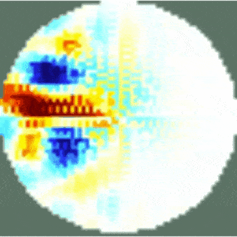

"Don't wish things were easier, wish you were better."
— Jim Rohn
I am an Embedded Systems Engineer currently building my career in Germany, with experience in firmware development,
PCB design, and FPGA-based solutions. I enjoy solving technical challenges, optimizing systems, and continuously
learning new technologies.
Working on aerospace and IoT projects has given me hands-on experience in embedded software and hardware development.
I like to stay organized, focused, and always push myself to improve.
I am excited about new opportunities where I can apply my skills, grow as an engineer, and contribute to innovative projects.
Check out some of the projects I’ve worked on that I can share!
Portuguese NativeEnglish Business FluentSpanish FluentGerman Intermediate (B1)
Programming Languages
C/C++ AdvancedPython Very GoodVerilog, VHDL Very GoodGit, Github Very GoodMatlab Basic KnowledgeQt Creator Basic Knowledge
Tools & Skills
FPGA/Hardware Accelerators Very GoodRISC-V GoodVivado Basic KnowledgePCB Design Very GoodAltium Designer AdvancedLTSpice Advanced
Embedded Linux
Firmware & Device Drivers Very GoodRaspberry Pi, STM32, ESP32 Very GoodKeil IDE Very GoodFreeRTOS Very GoodLinux Kernel GoodLinux Images (Buildroot, Yocto) GoodOpenCV GoodQEMU Basic Knowledge
- HACC-V is a cryptographic coprocessor for RISC-V, accelerating AES-based security in IoT devices.
It was implemented on FPGA using tightly- and loosely-coupled approaches, with an API for seamless IoT OS integration.
Grade: 1.3
Raspberry Electrical Impedance Tomography (EIT) Shield | Embedded Systems
Summary
This side project was a pleasure to develop during my stay at the Aerospace Informatics department at the University of Würzburg, where it was aimed at enhancing our Structural Health Monitoring system.
This project involves the development of an Electrical Impedance Tomography (EIT) shield designed for the Raspberry Pi. The EIT technique allows for the imaging of conductive properties within an object by applying small electrical currents and measuring the resulting voltages. The shield enables Raspberry Pi to interface with electrodes and process impedance tomography data.
The shield consists of custom-designed hardware and optimized software algorithms to collect and process impedance data. The software runs on Raspberry Pi, utilizing Python and C/C++ for real-time processing and visualization.
Below are the experimental results of detecting different mediums inside water while in motion. The images demonstrate the system's ability to analyze and visualize conductivity changes.

Water Tank Reconstruction results, EIT and FEM Water Tank Experimental setup
This was my master's thesis, which I had the pleasure to develop with the ESRG Algoritmi Center at the University. It was a proposed work to enhance an ongoing PhD thesis, representing a challenge beyond my comfort zone that provided me with a wealth of valuable knowledge.
FAC-V is an FPGA-based AES coprocessor designed to enhance cryptographic performance for RISC-V architectures. The project explores different integration approaches, including tightly and loosely coupled designs, to optimize security and efficiency in IoT applications.
The system accelerates AES encryption and decryption tasks while maintaining low-power consumption, making it suitable for embedded and security-critical applications. An API was developed to ensure seamless integration with RISC-V-based IoT operating systems.
This research provided remarkable results and led to the opportunity to publish a journal paper in the Journal of Low Power Electronics and Applications from MDPI. You can access the publication here: MDPI Paper.
The FACV-256 achieved a speedup of approximately 8000× when encrypting 16-byte messages using the RoCC Mem interface, with an energy cost of around 0.10 µJ. Additionally, when securing IoT network communication, the OS performance degradation due to cryptographic processing was reduced from 53.6% (software AES) to just 8.2% with FAC-V.
RPi & STM32 Camera Projects | Embedded Systems & Computer Vision
Summary
This project explores embedded computer vision applications using Raspberry Pi and STM32 microcontrollers. It consists of two major subprojects:
The Raspberry Pi implementation leverages OpenCV for real-time face detection and recognition. The camera is mounted on a pan-tilt mechanism that follows detected faces dynamically.
The STM32 project integrates a camera module with a sonar sensor to provide both visual and distance feedback. The system allows remote control of the camera’s position via wireless communication.